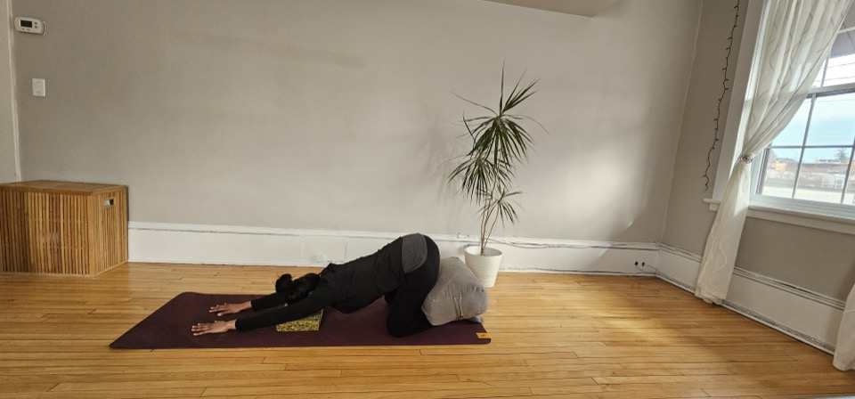
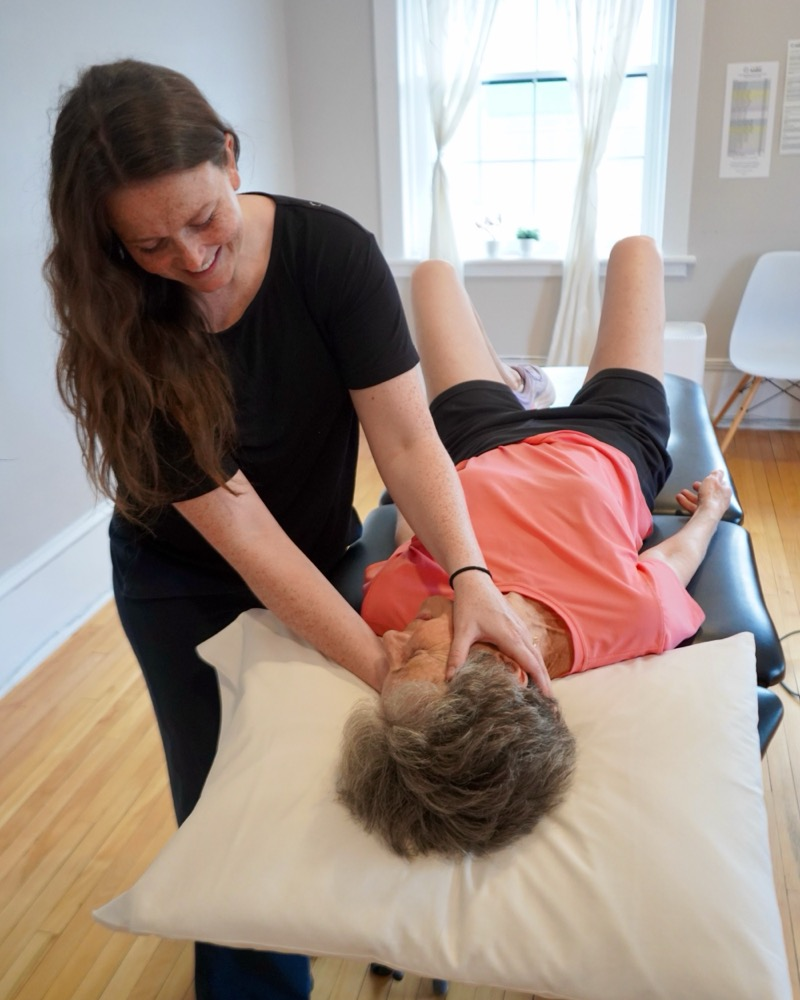

What we treat
Nine areas of focus, one integrated team. Every assessment looks at how your joints, muscles, breath, and pelvic floor work together — not just the spot that hurts.
Pelvic Health Physiotherapy
For women, men, and 2SLGBTQIA+ patients. Our approach is integrative and trauma-informed: a gentle, thorough assessment — internal exam optional and always by your consent — that looks at how your pelvic floor, core, breath, and hips work as one system.
We treat
- Urinary and bowel conditions, and pelvic organ prolapse
- Pelvic pain and sexual dysfunction
- Genitourinary syndrome of menopause
- Recovery from gender-affirming surgery
- Persistent low back and hip pain linked to the pelvic floor
Several of our therapists have advanced training in gender-affirming care, including support after vaginoplasty and for pain related to binding or tucking. Treatment often blends manual therapy, myofascial and visceral mobilization, and pain science education. Meet the team.


Pre & Postnatal Physiotherapy
Available virtually or in-clinic at any point in pregnancy, and any time after. We screen early for the conditions that are common, treatable, and too often written off as "normal."
Prenatal
- Pelvic girdle, low back, and rib pain
- Diastasis rectus abdominis and pelvic floor readiness for birth
- Breathing, positions, and vocal toning for labour
Postnatal
- C-section, perineal, and episiotomy scar recovery
- Incontinence, prolapse, and core strength rebuilding
- Graduated return to running and sport
Orthopedic Manual Therapy
Hands-on assessment and treatment for joint, muscle, and nerve-related pain. Our orthopedic therapists are CAMPT-certified — a designation that requires years of postgraduate manual therapy training beyond entry-level physiotherapy.
We treat
- Headaches, neck, shoulder, and back pain
- Hip and knee osteoarthritis, sciatica, and nerve pain
- Sports injuries and repetitive strain
- Osteoporosis, osteopenia, and fibromyalgia
Treatment blends manual therapy with individualized exercise and movement re-education, aimed at the root cause, not just the pain in front of you. Learn more about CAMPT certification.


Pessary Fitting Services
Ottawa's first pessary-fitting physiotherapy clinic. A pessary is a soft, flexible support placed in the vagina to manage pelvic organ prolapse or stress incontinence — a non-surgical option that's more like trying on jeans than anything intimidating.
Our process
- Pre-fitting assessment, with authorization from your physician or nurse practitioner
- Fitting appointment, trying pessaries until we find the right one
- Follow-up at 10 days, then 1, 3, 6, and 12 months
We fit seven pessary types (ring, ring with knob, dish, oval, Marland, cube, and Gellhorn) and pair fitting with pelvic floor re-education. Health professionals: our referral form (PDF) can be faxed to 613-907-1352.
Vestibular Physiotherapy
For dizziness, vertigo, and balance problems — whether from BPPV, a concussion, vestibular neuritis, migraines, or the neck. Some conditions like BPPV often resolve in one to three sessions; others take weeks of consistent therapy.
Helpful if you experience
- Room-spinning dizziness, worse with head movement
- Frequent loss of balance or reliance on furniture for stability
- Unsteadiness in busy or visually cluttered spaces
Please arrange a ride: assessments often intentionally provoke dizziness to help us find its cause, so we ask that someone accompany you and take you home afterward — not a rideshare or public transit.

Physiotherapy for Adults 60+
Staying strong, active, and independent as your body changes, with the same integrated, hands-on approach across every condition below.
Pain & bone health
Relief from arthritic pain, plus safe strength training for osteopenia and osteoporosis.
Balance & fall prevention
Postural and balance training to build confidence and reduce fall risk.
Vestibular & pelvic health
Dizziness and balance treatment alongside incontinence and prolapse care.
Hypermobility & Ehlers-Danlos Syndromes
For hypermobility spectrum disorders (HSD) and Ehlers-Danlos syndromes (EDS) — connective tissue conditions that need a different approach than standard strengthening.
Joint stability
Low-impact strengthening and proprioceptive training to reduce dislocation and hyperextension risk.
Pacing & joint protection
Education on movement patterns and lifestyle pacing to avoid overuse and flare-ups.
Custom exercise programs
Individually tailored plans, sometimes paired with cupping over scar tissue or restricted areas.
Complementary treatment modalities
Adjuncts we layer into a broader plan — never a substitute for assessment, always chosen for a specific reason.
Pelvic floor biofeedback
Real-time visual or audio cues so you can feel exactly when your pelvic floor engages or relaxes.
Cupping therapy
Suction-based release for scar tissue and restricted fascia, often used on C-section and abdominal scars.
Hypopressives
A breath-and-posture technique that lifts the pelvic floor and deep core, taught only after a full assessment.
Rectal balloon therapy
Biofeedback training for chronic constipation, fecal urgency, or difficulty coordinating the pelvic floor.
Therapeutic ultrasound
Sound-wave therapy that eases muscle tension or speeds cellular repair after a fresh injury.
PhysioYoga & Urban Poling
Movement-based sessions blending yoga principles or pole-supported walking into your recovery.
Telehealth Services
Most services, including initial assessments, are available over secure video or phone. It's a good fit for education and exercise-focused visits, mobility barriers, or simply a snowy day.
Consider telehealth if
- You'd benefit from education and exercise coaching more than hands-on treatment
- Transportation, childcare, or weather makes an in-clinic visit hard
- You're immunocompromised and prefer to limit in-person visits
Fees match in-clinic pricing, and most extended health plans in Ontario now cover telehealth physiotherapy. Not sure which fits? Call for a complimentary phone consultation.

Ready to get started?
Book online, or call for a complimentary phone consultation to find the right fit.